음악
Y2K·R&B를 중심으로 타이틀곡과 다른 녹음 버전을 함께 공개합니다.
4 DITS (771)는 부산을 배경으로 네 가상 인물의 이야기를 음악과 비주얼로 펼치는 Y2K·R&B 프로젝트입니다.
음악 사이트 방문 새 창음원 공개 · 멤버 비주얼 개발 중

부산은 이야기의 배경이자 시각적 모티프입니다. 하나의 밤을 네 인물의 서로 다른 관점으로 풀어냅니다.
Y2K·R&B를 중심으로 타이틀곡과 다른 녹음 버전을 함께 공개합니다.
네 가상 인물의 모습과 부산의 분위기를 연결하는 시안을 탐색합니다.
사람이 방향과 공개 범위를 결정하고, AI는 멤버 비주얼 시안을 탐색하는 도구로 활용합니다.
세 곡과 네 개의 녹음을 감상 공간에 모았습니다. 곡 선택, 가사 보기, 연속 재생은 음악 사이트에서 이용할 수 있습니다.
현재 이미지는 멤버 비주얼 개발 시안입니다. 완성 뮤직비디오는 아직 공개되지 않았습니다.
별도의 감상 공간을 새 창에서 엽니다.